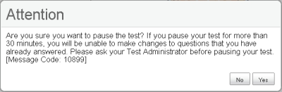
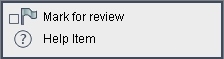

Keyboard Navigation
Test Selection Screens and In-Test Pop-ups
Use these keyboard commands to select options on the pages prior to your test or on pop-up messages that appear during your test. For example, if you see a screen with [No] or [Yes] buttons, you will need to navigate to that button to select it.
| Keyboard Command | Function |
|---|---|
| Move to the next option | |
| Move to the previous option | |
| Select the shaded option |
Pop-Up Message Example

Global Menu
The Global Menu contains all the options displayed along the bottom of the test screen.
- Press the
 +
+  keys to access the Global Menu. The menu will appear on the screen.
keys to access the Global Menu. The menu will appear on the screen. - Use the Up or Down arrow keys on your keyboard to move between options in the menu. Each option will be highlighted as you arrow up or down.
- Press the
 key to select the highlighted menu option.
key to select the highlighted menu option. - Press the [ESC] key to close the Global Menu.
Context Menus
The Context Menus contain the options available for each area of a test page. These areas of a test page are called “elements.”
The elements on a test include:
- Test items
- Answer options (A, B, C, and D)
Each element has its own context menu. To view the context menu for an element, you need to navigate to that element.
- Click the [TAB] key to navigate between test items.
- Click [CTRL] + [TAB] to switch from a test item to each answer option.
When you are on the element you want, you will see a light gray border around the text.
- Press the +
 keys on the keyboard. The context menu for that element will appear.
keys on the keyboard. The context menu for that element will appear. - Use the Up or Down arrow keys on your keyboard to move between options in the menu. Each option will be highlighted as you arrow up or down.
- Press the key to select the highlighted menu option.
- Press the [ESC] key to close the Context Menu.
Sample Context Menu for Test Item/Question
Note: This image may not match what you see on your screen.
| Button | Function / Details | Keyboard Commands |
|---|---|---|
| Open the GLOBAL MENU | ||
| Go to the NEXT test page | (or use the Global Menu) |
|
| Go to the PREVIOUS test page | (or use the Global Menu) |
|
| Move to the NEXT ELEMENT (on a page containing multiple items and/or a reading passage) | ||
| Move to the PREVIOUS ELEMENT (on a page containing multiple items and/or a reading passage) | ||
| Select 4-Point Response Option |
|
|
| Select 3-Point Response Option | ||
| Select 2-Point Response Option | ||
| Select 1-Point Response Option | ||
| Select 0-Point Response Option | ||
| Select No Response Option | ||
| Select Access Limited Option | ||
| PAUSE your test | ||
| END TEST | ||
| HELP GUIDE | ||
| ZOOM IN (increase the size of text and graphics on a page) | or use the Global Menu |
|
| ZOOM OUT (decrease the size of text and graphics on a page) | or use the Global Menu |
|
| SCROLL UP in an area of the test page | ||
| SCROLL DOWN in an area of the test page | ||
| SCROLL to the RIGHT in an area of the test page | ||
| SCROLL to the LEFT in an area of the test page | ||
| Open the CONTEXT MENU (for that passage, question, or answer choice) | ||
| MARK / UNMARK a question for review |